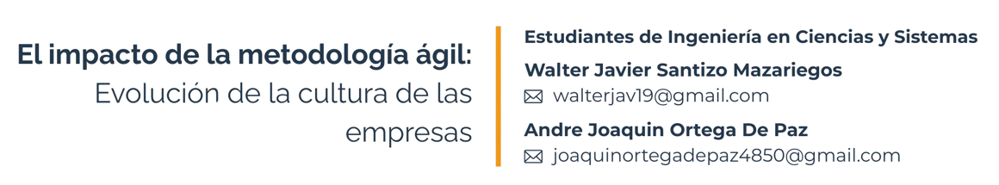

2 El impacto de la metodología ágil: Evolución de la cultura de las empresas

Palabras clave: Scrum, Kanban, Planificación, Negocio, Riesgo.
2.1 Introducción
El uso de metodologías ágiles ha crecido en los últimos años. La metodología tradicional era la común hasta hace un tiempo para ejecutar o poner en marcha un producto Hoy, a la larga, se le ha dado la razón al hecho de que es más efectivo usar metodología ágil en lugar del tradicional. Esto se puede notar en aprovechamiento en la empresa, en lo que es productividad, a la vez que en desarrollo y crecimiento en cuanto a entregas.
Las metodologías ágiles han ido creciendo tanto a nivel empírica asimilación que hoy son parte de hogar en muchas pymes y hasta empresas multinacionales. No sería mal aplicar un cambio de paradigma y empezar a aplicar estas metodologías en el desarrollo de producto.
2.2 Artículo
Las Metodologías Ágiles pueden parecer confusas al principio, pero desglosándolas, “Metodología” se compone de “Método” (procedimiento ordenado) y “-logía” (estudio o ciencia). “Ágil” implica rapidez y adaptación, como un futbolista que se mueve hábilmente con el balón. En programación, esto significa flexibilidad para cambiar tareas y ajustarse a nuevas necesidades, permitiendo un desarrollo más dinámico y eficiente.
Del enfoque tradicional a la agilidad: La evolución de las metodologías
En la actualidad, vivimos en una cultura empresarial cambiante donde es importante conocer de dónde proviene cada metodología usada. Una de las primeras innovaciones en cuanto al uso de una metodología se realizó en la empresa Ford dentro de una de sus líneas de montaje de automóviles en 1913; a partir de este proceso nació la metodología cascada que ayudó a cambiar la forma en la que un producto o servicio se desarrolla.
Con el paso del tiempo y el desarrollo de nuevas tecnologías, se ha originado una nueva forma de abordar dicha metodología, basada en estructuras rígidas que, por necesidad de mercado, deben adaptarse rápidas, y así, a largo plazo, se hacían ineficientes toda la documentario y planes fijos para cada tarea, por tanto, se planteó el cambio del trabajo hacia un proceso iterativo, colaborativo y flexible. Esto se reunificó cuando un grupo de personas desarrolló el Manifiesto Ágil en 2001, lo que desencadenó el auge de las metodologías ágiles.
Scrum y Kanban: Los pilares de la agilidad en las empresas
Scrum se basa en trabajar en ciclos llamados sprints, que pueden durar entre 1 y 4 semanas, dividiendo tareas complejas en partes más manejables. Su estructura incluye: - Sprint Planning: Es la planificación de tareas y objetivos del sprint, esta se realiza al inicio. - Daily Meetings: Son las reuniones breves que deben de realizarse de manera diaria para actualizar el progreso y resolver bloqueos. - Sprint Review: Es una evaluación de las tareas completadas que se tuvieron durante el sprint. - Sprint Retrospective: Es el análisis de mejoras donde todo el grupo se reúne para el siguiente sprint y reconocer donde pueden tener mejoras.
Por otro lado, Kanban permite visualizar el flujo de trabajo a través de un tablero con columnas como Por hacer, En progreso y Terminado. Esto facilita el seguimiento de tareas, la identificación de bloqueos y la gestión de prioridades. También existe Scrumban, que combina ambas metodologías, integrando la planificación de sprints de Scrum con la visualización de tareas de Kanban, logrando así un enfoque más flexible y eficiente.
Impacto en la actualidad de la cultura ágil en el negocio
Adaptar la cultura ágil a un entorno organizacional ha permitido que el panorama empresarial actual tome un nuevo rumbo, permitiendo que las empresas se adapten de forma más natural al mercado, lo que termina por satisfacer las demandas tan importantes de los clientes; en otras palabras, a mayores expectativas, mayor rapidez en la búsqueda de respuestas que satisfagan a los usuarios. Las metodologías ágiles al promover la flexibilidad, colaboración y retroalimentación continua terminan por resolver problemas de eficiencia lo que se traduce en dinero ahorrado por las empresas en actividades que normalmente resultan costosas y con pocos resultados.
Según un estudio de la firma de consultoría McKinsey, la implementación de la metodología ágil en las empresas genera ganancias de alrededor del 30% en eficiencia, satisfacción del cliente, compromiso de los empleados y rendimiento operativo [3]. Es importante mencionar que no solo se maximizan las ganancias también se mejora la innovación y la capacidad que se tiene para adaptarse a cambios de mercado. A nivel organizacional la cultura ágil fomenta de gran manera un entorno y una capacidad de comunicación más comprometida con la empresa donde los equipos de trabajo se ven potenciados en la resolución de problemas y toma de decisiones críticas.
2.3 Conclusiones
En la tecnología, la adaptabilidad es una de las habilidades que permite a las empresas mantenerse en el mercado de manera competitiva. La transición de una metodología tradicional a una ágil ha demostrado ser un punto de inflexión en la mejora de procesos, reducción de riesgos y optimización de ganancias. Scrum y Kanban han transformado la forma en que los equipos trabajan ya que promueven cualidades importantes dentro de la organización como la colaboración, flexibilidad y eficacia lo que termina por entregar más valor al producto desarrollado.
Múltiples empresas adoptan estos enfoques en busca de encontrar una respuesta inmediata a los cambios inherentes al mercado. Los cambios hacia lo ágil no son fáciles ni se realizan de manera inmediata ya que el esfuerzo hacia un cambio debe provenir tanto de la mentalidad y valores de la organización como de los miembros de la misma que son al final los que hacen que la organización sea posible mediante valores como aprendizaje, comunicación y adaptabilidad. El cambio de la organización de lo tradicional a lo ágil se puede resumir en que la agilidad, a mayor rendimiento e innovación, genera mayor relevancia y competitividad en el mercado.
Facebook, Apple y PayPal son empresas famosas que han tenido éxito por el uso de Scrum como metodología ágil, ya que, permiten iterar de manera más rápida y así facilitan la prueba de nuevas actualizaciones y funciones de forma periódica, además, de que se fomenta la comunicación y colaboración entre distintos equipos encargados del desarrollo de los productos que ofrecen.
2.4 Referencias
[1] Dovile Miseviciute. “Kanban, Scrum y Scrumban – Cómo se diferencian” Miseviciute, July 22, 2024. Accedido el 5 de febrero de 2024 . https://teamhood.com.
[2] Atlassian. “Scrumban: domina dos metodologías ágiles” Atlassian, Nov 08, 2021. Accedido el 7 de febrero de 2025. https://www.atlassian.com
[3] Revista Economía. “Agile: Más que una metodología, un cambio cultural empresarial.”Revista Economía, 2022. Accedido el 9 de febrero de 2025.https://www.revistaeconomia.com